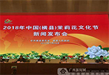
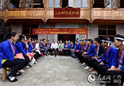

政府推广
-
"壮族三月三·八桂嘉年华”新闻发布会召开

是喜迎自治区成立60周年的重要活动内容之一，旨在充分展示习近平新时代中国特色社会主义思想在八桂大地的实践成果， 展示广西作为全国人口最多的少数民族自治区多姿多彩的民族传统文化，展示全区干部群众团结一心、和谐稳定的美好生活
-
2018年中国（横县）茉莉花文化节将于8月31日启幕
文化节突出群众参与、文化惠民的特点，坚持“以人民为中心”，强化群众的主体地位。 发掘精品茉莉文化，充分展现横县丰富深厚的茉莉文化底蕴，并提高群众参与度，打造人民的节日。
-
“非遗+扶贫”呈现新气象
广西因地制宜、因人施策，结合自身民族多样、文化多元的特点，引导全区各地探索和实践“非遗+扶贫”的文化扶贫之路，促进百姓增收，在就业培训、文化传承和产业发展等方面呈现出崭新气象。